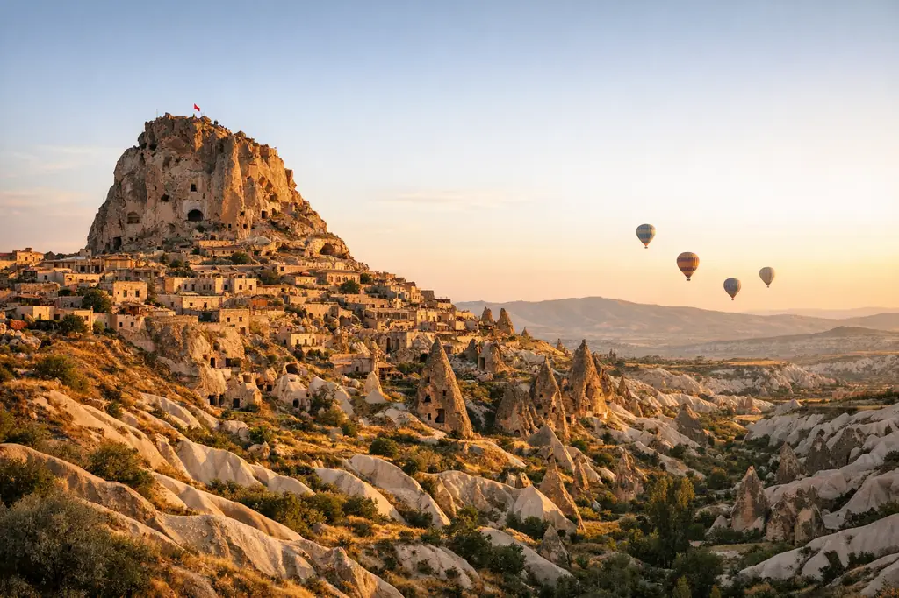
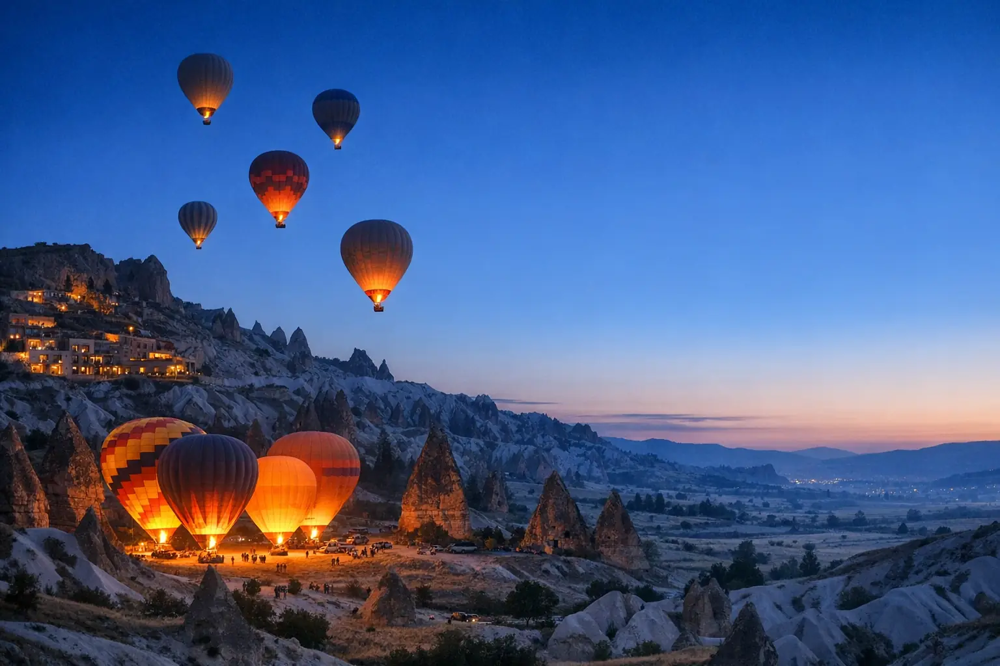

Cappadocia 3-Day Program
Three days in Cappadocia: two nights in a cave hotel, an optional sunrise balloon, the Red and Green tours, with domestic flights from and back to Istanbul.
PriceDepends on the season — request your quote

Destination guide • Cappadocia
Visiting Cappadocia (also spelled Kapadokya) is a journey to another world: rock valleys in fantastic shapes, colorful balloons at sunrise, hotels carved into the rock and entire underground cities.
Why Cappadocia?
Cappadocia is a historic region in central Anatolia spread across several provinces, chiefly Nevşehir, Kayseri, Aksaray and Niğde, and its best-known towns are Göreme, Uçhisar, Ürgüp and Avanos. Ancient volcanoes, then wind and rain over millions of years, shaped its soft rock into columns and cones known as "fairy chimneys", and UNESCO has inscribed Göreme National Park and the Rock Sites of Cappadocia on the World Heritage List. Most sights are a short distance from one another, so it is easy to get between them by car on half-day or full-day tours.
The most famous experience is the sunrise balloon ride, when dozens of balloons rise above the valleys in an unforgettable scene. Next come the cave hotels, with their rooms carved into the rock and terraces overlooking the balloons. If you prefer not to fly, watching the balloons from viewpoints in the morning is a lovely experience in itself. Cave hotels offer a unique stay that combines historic character with modern comfort, and many have terraces set aside for watching the balloons over breakfast.
Beyond the balloon, you will find underground cities such as Derinkuyu and Kaymaklı, whose levels were carved into the rock long ago for shelter, as well as the Göreme Open Air Museum, Paşabağ Valley and Imagination Valley, and Ihlara Valley with its river and trees, plus the pottery workshops of Avanos and horseback and ATV tours at sunset. Many visitors make a point of watching the sunset from Red Valley or Uçhisar hill, when the rocks take on shades of pink and gold.
Two to three days are enough for Cappadocia, and the easiest way to get there is to fly from Istanbul to Nevşehir Airport or Kayseri Airport in about an hour and a quarter. We arrange a 3-day Cappadocia program for you with the domestic flight, pickup, a cave hotel and a balloon booking, or we add it to a longer program such as the Turkey honeymoon program. Because balloon rides depend on the weather, we make sure to leave a spare morning in your program whenever possible.

Top sights
A carefully chosen list of what deserves your time in Cappadocia, with the visits smartly arranged within our programs.
About an hour in the air above the valleys and fairy chimneys, starting at first light. Each flight depends on the civil aviation permit and the wind conditions that morning.
A group of rock-cut churches and monasteries with colorful frescoes, and the historic heart of the World Heritage site.
The highest point in the area: a huge rock full of carved rooms, with views over Pigeon Valley and the surrounding mountains that are among the finest.
The best-known fairy chimneys, with multiple caps like mushrooms, and a perfect spot for family photos.
Rocks in which you can imagine animal shapes, the most famous being Camel Rock, in a quiet valley of soft pink.
The best place to watch the sunset, when the rocks turn red and pink. You can visit it on foot, on horseback or by ATV.
Multi-level cities carved beneath the surface of the earth, with passages, rooms and ventilation shafts, used in ancient times for shelter. Their passages are narrow and low in places.
A deep green valley with a river running between the rocks. You go down by a long staircase and walk along its banks, and nearby is Selime Monastery, carved into a huge cliff.
A town on the banks of the Kızılırmak, Turkey's longest river, known for centuries for its pottery, where you can try shaping clay on the wheel yourself.
An abandoned rock village between three valleys, where you walk among houses, churches and a small mosque carved into the rock.
Rooms carved into the rock with a modern design and terraces overlooking the balloons, an essential part of the experience even for a single night.
An adventure among the valleys at sunset, suitable for young people and families with older children, booked according to the weather.
Ready-made programs
Day-by-day programs that can be fully adjusted to your number of days and budget.

Three days in Cappadocia: two nights in a cave hotel, an optional sunrise balloon, the Red and Green tours, with domestic flights from and back to Istanbul.

Nine days for newlyweds: romantic Istanbul on the Bosphorus, two nights in a cave hotel in Cappadocia with a balloon option, and two nights in a private bungalow in Sapanca.

Two weeks to see all of Turkey: Istanbul, the cave hotels of Cappadocia, the historic Konya road, Antalya's beaches, then Trabzon and Uzungöl.
Day Trips
Where to stay?
We can also arrange airport pickup and a private English-speaking driver for you.
OYA tips
Design your trip
Fill in the form and you will receive a suggested itinerary on WhatsApp, with hotel and transport options.
Questions & answers
The price varies by season, company and basket size (standard, small or private), and it is usually higher in summer and during holidays. For this reason we do not publish a fixed price; on request, we send you the updated price for your date via WhatsApp.
Balloon companies operate under licenses and the supervision of the Turkish Civil Aviation authority, and flights only go ahead when the weather allows. As for children, most companies set a minimum age (often around 6 years), and we confirm the conditions for you before booking.
Two nights are enough for the balloon ride and the Red and Green tours; three nights are better, to secure a backup morning for the balloon and to spend more time in a cave hotel.
The fastest way is to fly to Nevşehir Airport (NAV) or Kayseri (ASR) in about an hour and a quarter, then travel by car to the hotel. There is also a night bus option (about 10–11 hours), but it is tiring for families.
Flights are canceled when there is wind or unsuitable weather. You usually get a refund or your booking is moved to another morning, depending on the company's policy. That is why we recommend at least two nights and keeping a spare morning.
Spring (April–June) and autumn (September–October) are the best for their mild weather. Winter is very beautiful, with snow on the valleys, but it is cold, and balloon flights may be canceled more often than in other seasons.
Yes, they are among the highlights of Cappadocia, and they range from simple to luxurious, with Jacuzzis and private terraces. For families, we choose spacious, child-friendly rooms, because some cave rooms require climbing stairs.
From the OYA guide

A guide for couples choosing a honeymoon destination in Turkey by season and taste, with a comparison table, a suggested 9-day itinerary and romantic touches that make the difference.

Turkey has varied climates, so what suits Istanbul may not suit Antalya or Uzungöl in the same month. A month-by-month guide helps you choose the timing and the destination together.

Instead of generic numbers that don't fit your trip, we explain the components of travel costs in Turkey and what raises and lowers them, with a simple way to calculate a one-week budget and practical saving tips.
Discover more

City of two continents and Bosphorus magic

Gateway to Turkey's green Black Sea

A lake among clouds and forests

The first Ottoman capital and the snow mountain

A lake and forests two hours away

Sun, sea and mountains on the Mediterranean

Aegean bays and yacht marinas
Personal service from start to finish
Tell us your destination, dates and number of travelers, and you will receive a detailed quote shortly — with no obligation.